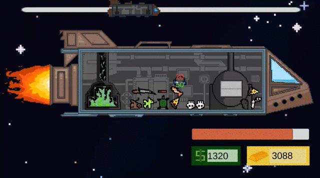

No Tanks Left
- Local Multiplayer
- Party Game

The Patient
- 3D Immersive Horror
- Puzzle

Shape of the Forest
- Action Platformer
- 2D Dark Souls

Hotline Elf
- Action Shooter
- Game Jam

Space Space Manager
- Management / Simulation
- Game Jam

Ascension
- Prototype
- Rope Swing Mechanic / Grappling Hook